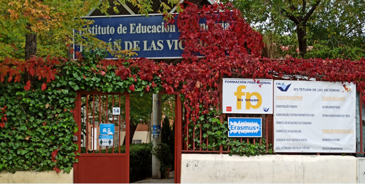

01 / EXPERIENCIA
Una mirada personal a mi experiencia en el IES Tetuán de las Victorias
Sobre mí
Soy Lucía y actualmente estudio Desarrollo de Aplicaciones Web (DAW) en el IES Tetuán de las Victorias. Mi experiencia en el centro ha estado marcada por el aprendizaje de diferentes áreas relacionadas con la programación y el desarrollo web, además de la realización de proyectos que me han permitido poner en práctica lo aprendido.
Durante este tiempo también he podido conocer el instituto desde mi propia experiencia como estudiante. Lo considero un centro con un ambiente agradable y cercano, que combina una imagen más clásica con algunos aspectos modernos. A lo largo del curso he ido descubriendo nuevas herramientas, asignaturas y formas de trabajar que me han ayudado a acercarme poco a poco al mundo profesional.
Más allá de los conocimientos técnicos, estudiar aquí también me ha permitido conocer mejor qué áreas me gustan y seguir desarrollándome como estudiante dentro del mundo de la informática y el diseño.


Favicon
Iniciales
El favicon que utilizo en mis proyectos está formado principalmente por mis iniciales LF, que corresponden a mi nombre y apellido, funcionan como una pequeña identidad personal. He querido mantener un diseño sencillo para que pueda reconocerse fácilmente incluso cuando aparece en un tamaño pequeño.
Icono
La estrella añade un pequeño detalle diferente y aporta personalidad al diseño sin hacerlo demasiado recargado. La he utilizado como elemento decorativo que acompaña a las iniciales y hace que el favicon sea más característico.
Tipografía
Para las letras he elegido Playfair Display Semi Bold, una tipografía serif que aporta un aspecto elegante y cuidado. El grosor Semi Bold permite que las letras se distingan bien en un espacio reducido, mientras que las serifas le dan un carácter más personal.
Colores
Los colores también forman parte de mi identidad. He utilizado un granate oscuro sobre un fondo crema, una combinación que mantiene el carácter que busco pero resulta más suave y relajada que un rojo intenso o un fondo negro.
De esta forma, el favicon representa una identidad personal, sencilla y elegante, que puedo mantener en mis diferentes proyectos aunque cada uno tenga su propio diseño y colores.